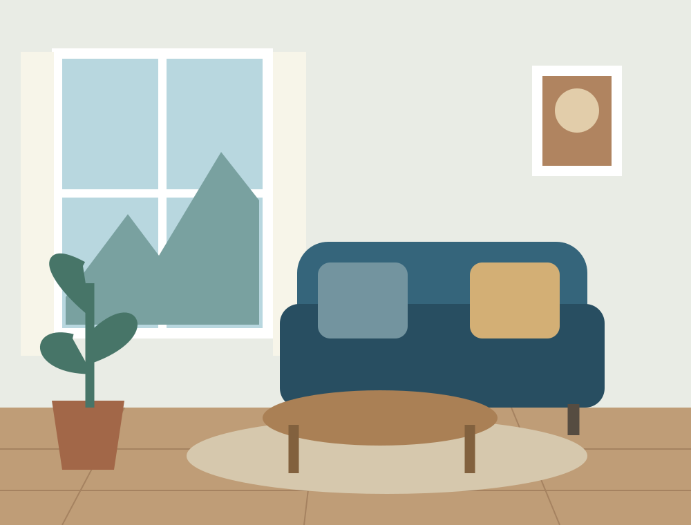
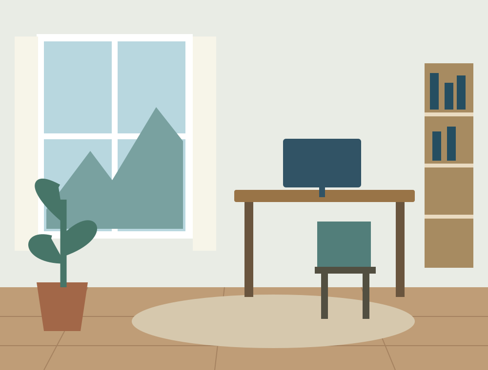

Espacios para vivir a tu manera.
La luz, los materiales y los objetos que elegimos cambian cómo habitamos un lugar. Diseñamos ambientes cómodos, simples y cercanos.
Explorar ambientes
Dos formas de habitar
Un lugar para encontrarse
Texturas naturales, luz cálida y muebles pensados para compartir.

Un rincón para crear
Orden y espacio para concentrarse sin perder comodidad.
Construido con Sass
Práctica académica de diseño de interiores: estructura semántica, módulos y adaptación móvil.